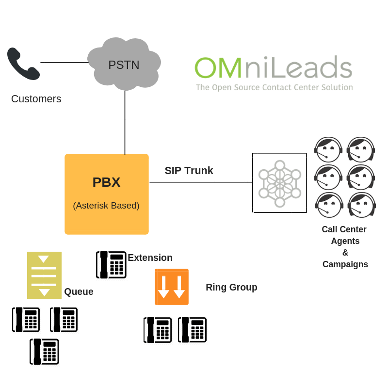
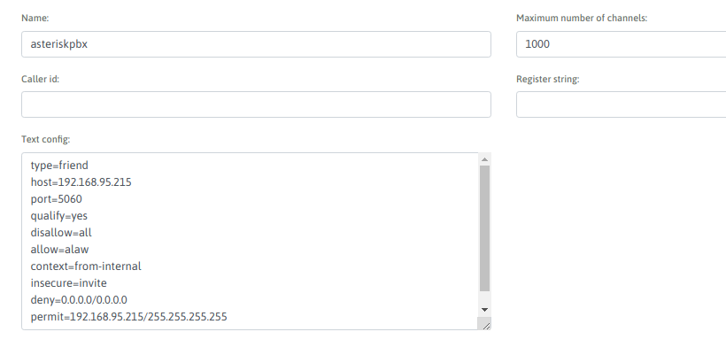

Troncal SIP entre OMniLeads y un PBX¶
El esquema que se repasa en esta sección es el que presenta la figura 1.
Figure 1: OML and PBX integration
Parámetros para el troncal SIP en el PBX¶
Se debe considerar el hecho de que nombramos (Trunk Name) al troncal como omnileads
En la sección “PEER Details” del formulario de nuevo troncal SIP dentro del PBX, se consideran los siguientes parámetros:
type=friend
host=XXX.XXX.XXX.OML
port=5160
defaultuser=asteriskpbx
qualify=yes
disallow=all
allow=alaw
context=from-internal
insecure=invite
deny=0.0.0.0/0.0.0.0
permit=XXX.XXX.XXX.OML/255.255.255.255
NOTA: tener en cuenta que el puerto SIP en OMniLeads es 5160.
En la figura 2, se expone dicha configuración.

Figure 2: PBX side - SIP trunk
Parámetros para el troncal SIP en OMniLeads¶
Se debe considerar el hecho de que nombramos (Trunk Name) al troncal como asteriskpbx
En la sección “Trunk Details” del formulario de nuevo troncal SIP dentro de OMniLeads, se consideran los siguientes parámetros:
type=friend
host=XXX.XXX.XXX.PBX
port=5060
defaultuser=omnileads
qualify=yes
disallow=all
allow=alaw
context=from-pstn
insecure=invite
deny=0.0.0.0/0.0.0.0
permit=XXX.XXX.XXX.PBX/255.255.255.255
En la figura 3, se expone dicha configuración.
Figure 3: OMniLeads side - SIP trunk
Comprobación del estado del troncal¶
En este punto simplemente se accede a cada nodo (OMniLeads y PBX) por medio de una sesión SSH y desde cada conexión se debe ejecutar el comando de Asterisk
asterisk -rx 'sip show peers'
Esto listará todos los peers SIP y su estado, como lo expone la figura 4.